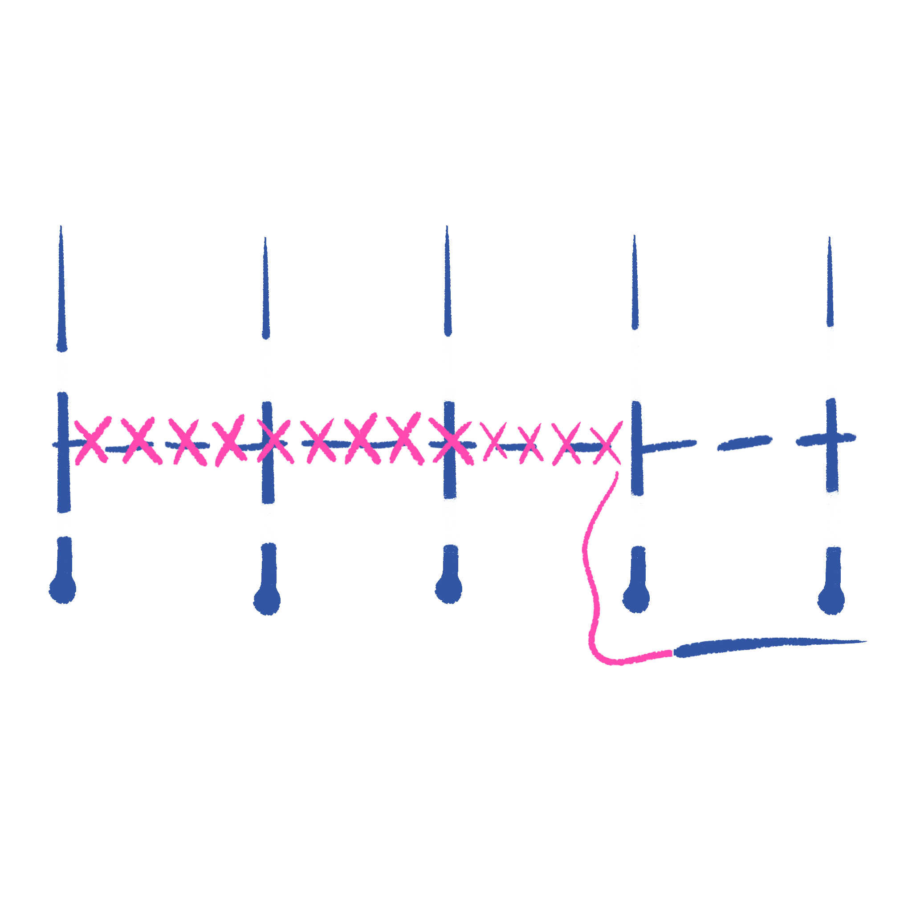
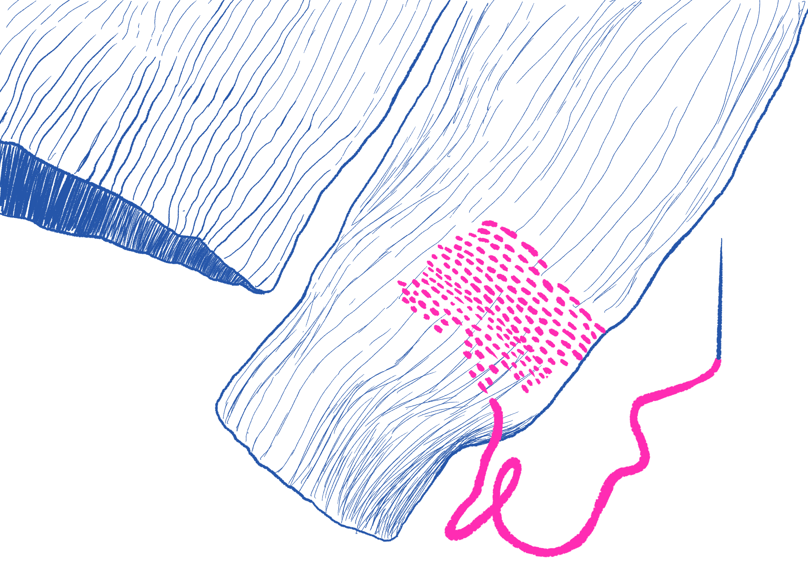

TIME NEEDED
15 - 30 mins. Depends on size of hole
DIFFICULTY
MATERIALS
Tennis Ball / Anything to stretch out fabric (I have used a box of staples to stretch a sock)

Optional: Yarn

DARNING A HOLE
Darning is a useful technique to know for repairing holes or areas on your clothing that have become worn, it can be used to prevent holes as well. It is a traditional method for repairing clothes that has been around forever! There are specific materials you can get for darning, but I have always just used any regular needle I can find and the same colored thread as the garment. I find it fun to watch a TV show and darn a pair of socks I’m emotionally attached to. As with all the stitches/repairs on this site, the more you practice the cleaner the results will be!
INSTRUCTIONS
1. Place a tennis ball or whatever object under the area you will need to provide support.
2. Optionally use chalk to mark around the hole or worn area to create a guide that you will sew within.
3. Prepare your needle and thread: cut a length of thread appropriate for the size of the hole – 2x the size of your wrist is a good length in most cases. Thread the needle, doubling the thread and tie a knot with the 2 ends.
4. Start your needle at the fabric near the edge of the hole. Sew evenly spaced vertical stitches covering the hole these are the warp threads which will form a foundation.
Next are weft threads which are the threads going in the opposite direction (horizontal) which will weave through the straight stitches just made.
5. Now keeping the needle parallel to the fabric weave the needle in and out of the fabric across the hole, the aim is to fill in the hole with this woven pattern. Keep weaving until the fabric is reinforced.
6. After darning the hole, sew a few additional stitches around the edges to secure the threads in place. Knot the thread on the backside of the fabric and trim any excess.